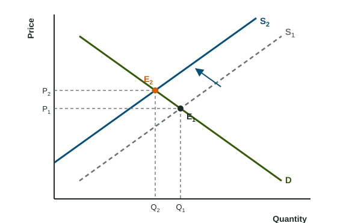

At a farmers market, the price of strawberries settles each morning where what shoppers want matches what growers brought. When a heat wave cuts the harvest, the meeting point moves to a new price. Most graph questions in this course ask the same two things: where do the curves cross, and where do they cross after one of them moves?
The crossing point
When two curves are drawn on the same axes, the point where they meet is the intersection point. On a market graph, the downward curve D shows how many units buyers want at each price and the upward curve S shows how many sellers offer. At the crossing, both curves give the same quantity at the same price: buyers want exactly what sellers offer. That price and quantity are where the market settles, and you will name them in the next chapter.
Mark the crossing with a dot, label it (E1), and drop dashed lines to both axes. Label where the dashed lines meet the axes: P1 on the vertical axis and Q1 on the horizontal axis.
Worked example: find the crossing from a table. Buyers want 80 phone cases a week at $10, 60 at $15, 50 at $20 and 40 at $25. Sellers offer 20, 40, 50 and 60 at the same prices.
- Look for the row where the two quantities match. At $20, buyers want 50 and sellers offer 50.
- So the curves cross at a price of $20 and a quantity of 50.
- Check a row on each side. At $15 buyers want more (60) than sellers offer (40); at $25 sellers offer more (60) than buyers want (40). The crossing sits between them.
Before and after a shift

When one curve shifts, the crossing slides along the curve that did not move. In the figure, S shifts left, so the new crossing E2 slides up the downward curve D: the price rises from P1 to P2 and the quantity falls from Q1 to Q2. Comparing the old and the new crossing on each axis is called a before-and-after comparison, and it is how every graph answer on the exam ends.
| Which curve shifts | The crossing slides along | Price | Quantity |
|---|---|---|---|
| D shifts right | S, upward | rises | rises |
| D shifts left | S, downward | falls | falls |
| S shifts right | D, downward | falls | rises |
| S shifts left | D, upward | rises | falls |
You do not need to memorize the table. Follow the curve that stayed put: a shift of D moves the crossing along S, so price and quantity move the same way; a shift of S moves it along D, so they move in opposite directions.
Worked example: read the change. A rainy forecast makes buyers want more umbrellas at every price.
- Which curve? The forecast changes what buyers want, so D shifts right (to D2). S stays put.
- New crossing. E2 sits where D2 meets S: up and to the right along S.
- State both changes. The price rises from P1 to P2 and the quantity rises from Q1 to Q2.
What a full graph answer shows
A complete answer has labeled axes, labeled curves (with subscripts for the one that moved), an arrow for the shift, both crossings marked, dashed lines to both axes, and the old and new values labeled on each axis. Then one sentence says what happened to each variable and in which direction. Readers score each of these; leave one out and the point it carries is gone, even when the rest is right.